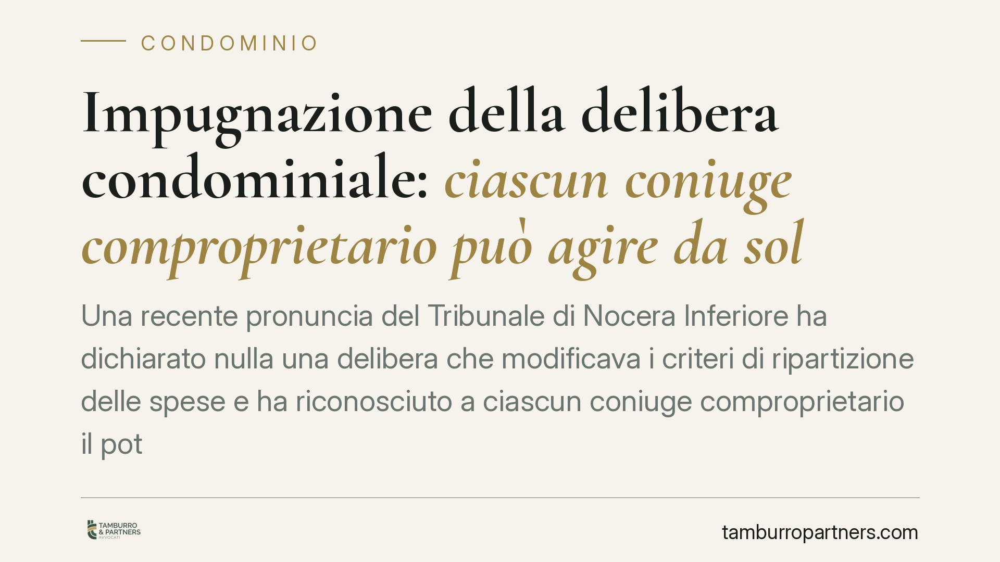

Impugnazione della delibera condominiale: ciascun coniuge comproprietario può agire da solo
Una recente pronuncia del Tribunale di Nocera Inferiore ha dichiarato nulla una delibera che modificava i criteri di ripartizione delle spese e ha riconosciuto a ciascun coniuge comproprietario il potere di impugnarla autonomamente, anche in caso di dissenso dell'altro. La decisione tocca il confine tra diritto condominiale e disciplina della comproprietà familiare.

Il caso
Il Tribunale di Nocera Inferiore ha esaminato una delibera assembleare che modificava i criteri di ripartizione delle spese condominiali. La delibera è stata dichiarata nulla.
Il profilo più interessante riguarda la legittimazione ad agire. L'immobile apparteneva a due coniugi in comproprietà. Uno solo di essi ha impugnato la delibera; l'altro non aveva manifestato analoga volontà. Il Tribunale ha ritenuto valida l'impugnazione proposta dal singolo comproprietario.
*(Gli estremi esatti della pronuncia — numero, sezione e data — vanno verificati presso la cancelleria prima di ogni utilizzo in sede difensiva.)*
Inquadramento normativo
Occorre distinguere due piani.
Sul piano condominiale, l'art. 1137 c.c. disciplina l'impugnazione delle delibere annullabili, soggetta al termine di decadenza di trenta giorni. Le delibere nulle — come quella che incide sui criteri legali o convenzionali di riparto in assenza del necessario consenso — non soggiacciono a tale termine e possono essere fatte valere senza i limiti dell'art. 1137 c.c. La distinzione tra nullità e annullabilità, e i relativi termini, è il primo elemento da verificare.
Sul piano della comproprietà, la questione è la legittimazione del singolo. L'impugnazione di una delibera lesiva del diritto comune non è un atto di ordinaria amministrazione, ma un atto conservativo: è diretto a proteggere il bene da un pregiudizio. Per la comunione ordinaria il fondamento è l'art. 1105 c.c., che consente a ciascun partecipante di compiere gli atti necessari alla conservazione della cosa comune. Per la comunione legale tra coniugi la disciplina è quella degli artt. 177 e seguenti c.c.; l'art. 180 c.c. riserva l'ordinaria amministrazione all'esercizio disgiunto di ciascun coniuge. In entrambi i casi la reazione a un atto potenzialmente lesivo non richiede il consenso dell'altro comproprietario.
È utile tenere distinta questa ipotesi da quella dell'art. 1132 c.c., che regola il diverso tema del condomino dissenziente rispetto alle liti deliberate dall'assemblea: lì si discute della posizione di chi vuole dissociarsi da una causa condominiale, non della legittimazione individuale a impugnare.
Perché conta: la ripartizione delle spese
La delibera annullata interveniva sui criteri di riparto. Quando sono coinvolti lastrici solari o terrazze a livello, il riferimento è l'art. 1126 c.c., che pone un terzo delle spese a carico di chi ha l'uso esclusivo del lastrico e i restanti due terzi a carico dei condomini cui il lastrico funge da copertura.
Si tratta di un criterio legale. La sua modifica richiede, di regola, il consenso di tutti i condomini interessati: una delibera a maggioranza che alteri questi parametri può risultare viziata, con le conseguenze viste in tema di nullità.
Implicazioni pratiche
Per chi è proprietario insieme al coniuge, la pronuncia offre un chiarimento operativo: l'inerzia o il dissenso dell'altro comproprietario non preclude, di per sé, la possibilità di reagire a una delibera ritenuta lesiva. Il singolo può attivarsi a tutela del bene comune.
Resta però essenziale qualificare correttamente il vizio. Se la delibera è annullabile, il termine di trenta giorni dell'art. 1137 c.c. è perentorio e decorre dalla comunicazione o dalla partecipazione all'assemblea. Se è nulla, il termine non opera, ma la qualificazione va dimostrata. L'errore di inquadramento può pregiudicare l'intera azione.
Cosa fare in concreto
- Recuperare il verbale dell'assemblea e verificare la data di comunicazione, per individuare l'eventuale decorrenza del termine di trenta giorni.
- Qualificare il vizio: distinguere se la delibera sia annullabile (termine ex art. 1137 c.c.) o nulla (impugnabile senza termine).
- Verificare il regime di proprietà dell'immobile e la posizione dell'altro comproprietario.
- Controllare i criteri di riparto applicati, con particolare attenzione all'art. 1126 c.c. per lastrici e terrazze a livello.
- Considerare che la qualificazione del vizio e l'impostazione dell'azione richiedono un esame tecnico della documentazione completa.
La materia si colloca all'incrocio tra diritto condominiale e disciplina della comproprietà familiare: due ambiti con regole proprie, da leggere in modo coordinato.
Disclaimer
Contributo informativo a cura di Tamburro & Partners Avvocati — Avv. Giuseppe Tamburro. Non costituisce parere legale.
Ogni condominio ha una storia a sé.
Se gestisci un'amministrazione e vuoi un confronto su una specifica questione condominiale, scrivi allo studio. Ti rispondiamo entro un giorno lavorativo.